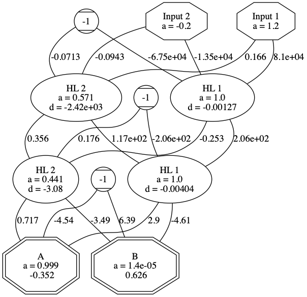

Table of Contents
Class:
Nueral Net
import numpy as np import random; <<Node>> class Neural_Net(): def __init__(self, hidden_layers): self.hidden_layers = list(map(lambda layer_size: np.empty(layer_size + 1, dtype=Node), hidden_layers)) self.input_layer = np.array([], dtype=Node) self.output_layer = [] for (layer_i, layer) in enumerate(self.hidden_layers): for node_i in range(0, len(self.hidden_layers[layer_i])): # Create a Perceptron object for each node in the hidden hidden_layers if node_i == 0: layer[node_i] = Bias_Node() else:layer[node_i] = Perceptron() # if ther is a next hidden layer set the weights going out of this node if layer_i + 1 < len(self.hidden_layers): # The "- 1" is to exlude the bias node layer[node_i].weights = np.random.rand(len(self.hidden_layers[layer_i + 1]) - 1) layer[node_i].weights = layer[node_i].weights * 2 - 1 <<calc_activ>> <<load_inputs>> <<propagate_forward>> <<fit>> <<back_propagate>> <<adjust_weights>> <<predict_one>> <<predict>> <<train>> <<generate_dot_code>>
Calculate Activation
def calc_activ(self, prev_layer, index): """documentation""" import math h = sum(map(lambda node: node.value * node.weights[index], prev_layer)) return 1/(1 + math.e ** -h)
Load Inputs
def load_inputs(self, data_vector): """documentation""" # Set Input Nodes (Add one to the input layer index to avoid the bias node) for (i, value) in enumerate(data_vector): self.input_layer[i + 1].value = value
Propagate Forward
def propagate_forward(self): """documentation""" # Go through the hidden layers for (layer_i, layer) in enumerate(self.hidden_layers): prev_layer = self.input_layer if layer_i == 0 else self.hidden_layers[layer_i-1] for (node_i, node) in enumerate(layer[1:]): # Do not change Bias Nodes self.hidden_layers[layer_i][node_i + 1].value = self.calc_activ(prev_layer, node_i) # do the output layer for (node_i, node) in enumerate(self.output_layer): self.output_layer[node_i].value = self.calc_activ(self.hidden_layers[-1], node_i)
Fit
def fit(self, data, targets, batch_size): """documentation""" # Create the input and output layers self.input_layer = np.empty(len(data[0]) + 1, dtype=Node) self.output_layer = np.empty(len(list(set(targets))), dtype=Output_Node) # Make the Input Nodes for node_i in range(0, len(self.input_layer)): self.input_layer[node_i] = Bias_Node() if node_i == 0 else Input_Node() # The "- 1" is to exlude the bias node self.input_layer[node_i].weights = np.random.rand(len(self.hidden_layers[0]) - 1) self.input_layer[node_i].weights = self.input_layer[node_i].weights * 2 - 1 # Make the Output Nodes for (index, value) in enumerate(set(targets)): self.output_layer[index] = Output_Node(value) # Fill in the weights for the last hidden layer for i in range(0, len(self.hidden_layers[-1])): self.hidden_layers[-1][i].weights = np.random.rand(len(self.output_layer)) self.hidden_layers[-1][i].weights = self.hidden_layers[-1][i].weights * 2 - 1 # Train the NeuralNet # self.train(data, targets, batch_size)
Train
def train (self, data, targets, batch_size): """documentation""" self.layer_costs = list(map(lambda layer : np.full(len(layer), 0.0), self.hidden_layers)) self.layer_costs.append(np.full(len(self.output_layer), 0.0)) for i in range(0, batch_size): for ( index, data_vector ) in enumerate(data): if index < 5: target = targets[index] # make the target_vector target_vector = np.full(len(self.output_layer), 0) for (i, node) in enumerate(self.output_layer): if node.label == target: target_vector[i] = 1 break self.predict_one(data_vector) output_vector = np.array(list(map(lambda node: node.value, self.output_layer))) self.layer_costs[-1] = output_vector * (1 - output_vector) * (output_vector - target_vector) self.back_propagate() self.adjust_weights() print('Index: ', index) # if (index + 1) % batch_size == 0:
Predict
def predict(self, data): """documentation""" predictions = [] for ( index, data_vector ) in enumerate(data): break # predictions.append(self.predict_one(data_vector)) return predictions
Predict One
def predict_one(self, data_vector): """documentation""" self.load_inputs(data_vector) print('data_vector: ', data_vector) input_layer = [] for node in self.input_layer: input_layer.append(node.value) print('Input Layer', input_layer) self.propagate_forward() def get_node_value(node): return node.value output_layer = [] for node in self.output_layer: output_layer.append(node.value) print('Output Layer', output_layer) return max(self.output_layer, key=get_node_value).label
Back Propagate
def back_propagate(self): """documentation""" for layer_i in range(len(self.hidden_layers) - 1, -1, -1): layers_a = np.array(list(map(lambda node: node.value, self.hidden_layers[layer_i]))) weight_cost_sum = [] for (node_index, node) in enumerate(self.hidden_layers[layer_i]): weight_cost_sum.append( sum(map(lambda weight, cost: weight * cost, node.weights, self.layer_costs[layer_i + 1]))) self.layer_costs[layer_i] = layers_a * (1 - layers_a) * weight_cost_sum
Adjust Weights
def adjust_weights(self): """documentation""" # Adjust input node weights for (n_i, node) in enumerate(self.input_layer): for (w_i, weight) in enumerate(node.weights): self.input_layer[n_i].weights[w_i] = weight - node.value * self.layer_costs[0][w_i] # Adjust hidden_layer node weights for (l_i, layer) in enumerate(self.hidden_layers): for (n_i, node) in enumerate(layer): for (w_i, weight) in enumerate(node.weights): self.hidden_layers[l_i][n_i].weights[w_i] = weight - node.value * self.layer_costs[1 + l_i][w_i]
Generate Dot Code
<<display_net>> def generate_dot_code (self): print('#+begin_src dot :file neural-net.png\n graph decisionTree {\n bgcolor = white;') self.display_net() print('}\n#+END_SRC')
Display Net
def display_net (self): # Display input nodes and links for (i, node) in enumerate(self.input_layer): node_prefix = "Bias" if i == 0 else "Input" node_shape = "Mcircle" if i == 0 else "octagon" node_id = "{}_{}".format(node_prefix, i) node_name = "-1" if i == 0 else "{} {}\na = {}\n".format(node_prefix, i, node.value) print(' "{}"[shape="{}"][label="{}"]'.format(node_id, node_shape, node_name)) for (j, j_node) in enumerate(self.hidden_layers[0]): if j != 0: print(' "{}" -- "HL_0_{}" [label="{:.3}"]'.format(node_id, j, node.weights[j - 1])) # Display output_nodes nodes for (i, node) in enumerate(self.output_layer): print(' "Out_{}"[shape="doubleoctagon"][label="{}\na = {:.3}\n {:.3}"]'.format(i, node.label, node.value, self.layer_costs[-1][i])) # Display the hidden nodes and links for (layer_i, layer) in enumerate(self.hidden_layers): for (i, node) in enumerate(layer): node_prefix = "Bias" if i == 0 else "HL" node_shape = "Mcircle" if i == 0 else "oval" node_id = "{}_{}_{}".format(node_prefix, layer_i, i) node_name = "-1" if i == 0 else "{} {}\na = {:.3}\nd = {:.3}".format(node_prefix, i, node.value, self.layer_costs[layer_i][i]) print(' "{}"[shape="{}"][label="{}"]'.format(node_id, node_shape, node_name)) # Connect it to the next layer if layer_i == len(self.hidden_layers) -1: for (j, j_node) in enumerate(self.output_layer): print(' "{}" -- "Out_{}" [label="{:.3}"]'.format(node_id, j, node.weights[j])) else: for j in range(1, len(self.hidden_layers[layer_i + 1])): jnode_id = "HL_{}_{}".format(layer_i+1, j) print(' "{}" -- "{}" [label="{:.3}"]'.format(node_id, jnode_id, node.weights[j-1]))
Node
class Node(): def __init__(self, value): self.value = value <<Output_Node>> <<Input_Node>> <<Bias_Node>> <<Perceptron>>
Output Node
class Output_Node(Node): def __init__(self, label, activ = 0, delta = 0): super().__init__(activ) self.delta = delta self.label = label self.weights = np.array([], dtype = float) pass
Input Node
class Input_Node(Node): def __init__(self, value = 0): super().__init__(value) self.weights = np.array([], dtype = float)
Bias Node
class Bias_Node(Node): def __init__(self): super().__init__(-1) self.weights = np.array([], dtype = float)
Perceptron
class Perceptron(Node): def __init__(self, activ = 0, delta = 0): super().__init__(activ) self.delta = delta self.weights = np.array([], dtype = float)
Main
<<Neural_Net>> import mnist mndata = MNIST('samples') # images_train, labels_train = mndata.load_training() # index = 1 # # print(mndata.display(images_train[index])) # nn = Neural_Net([20,20]) # nn.fit(images_train[:100], labels_train[:100], 100) # images_test, labels_test = mndata.load_testing() # predictions = nn.predict(images_test) # right = 0 # for predicted, target in zip(predictions, labels_test): # if predicted == target: right += 1 # if predicted == 'ERROR': print(predicted, target) # accuracy = round(right / len(labels_test) * 100, 2) # print('My classifier was, {}% accurate'.format(accuracy))
<<Neural_Net>> from sklearn import datasets import math nn = Neural_Net([5,5,5]) iris = datasets.load_iris() length = len(iris.data) split_index = math.floor(length * .7) combined_data = np.array(list(map(lambda data_row, target: np.append(data_row, target), iris.data, iris.target))) np.random.shuffle(combined_data) train = combined_data[:split_index] test = combined_data[split_index:] data_train = train[:,:-1] targets_train = train[:,-1].astype(int) data_test = test[:,:-1] targets_test = test[:,-1].astype(int) # print(targets_train) trainings = 1 nn.fit(data_train, targets_train, trainings) nn.train(data_train, targets_train, trainings) predictions = nn.predict(data_test) # print(predictions) # print(targets_test) # nn.generate_dot_code() right = 0 for predicted, target in zip(predictions, targets_test): if predicted == target: right += 1 accuracy = round(right / len(targets_test) * 100, 2) # for node in nn.hidden_layers[0]: # print(node.value, node.weights) print(train) print('My classifier was, {}% accurate'.format(accuracy))

<<Neural_Net>> nn = Neural_Net([2,2]) data = [[1.2, -.2], [1.2, -.2], [1.2, -.2], [1.2, -.2], [1.2, -.2], [1.2, -.2], [1.2, -.2], [1.2, -.2], [1.2, -.2], [1.2, -.2], [1.2, -.2], [1.2, -.2], [1.2, -.2], [1.2, -.2], [1.2, -.2]] targets = ['B', 'A', 'A', 'A', 'A', 'A', 'A', 'A', 'A', 'A', 'A', 'A', 'A', 'A', 'A' ] nn.fit(data, targets, 3) nn.input_layer[0].weights = np.array([.2, -.1]) nn.input_layer[1].weights = np.array([.3, .2]) nn.input_layer[2].weights = np.array([.4, -.1]) nn.hidden_layers[0][0].weights = np.array([.3, .1]) nn.hidden_layers[0][1].weights = np.array([.2, -.2]) nn.hidden_layers[0][2].weights = np.array([-.1, .4]) # nn.predict(data) nn.train(data, targets, 1) # output_vector = np.array(list(map(lambda node: node.value, nn.output_layer))) # print(output_vector) # print(nn.hidden_layers[0][0].value) nn.generate_dot_code() # print(list(map(lambda node: node.value, nn.output_layer)))
rest
# l = [1,2,3,4,5] # print(l[1:]) # <<Node>> # i = Input_Node(5) # print(i.value.activ) l = [1,2,3,4] l.append(5) print(l) # <<Perceptron>> # ar1 = np.empty(5, dtype=Perceptron) # ar2 = np.random.rand(5) # # print(ar2) # for i in range(0, len(ar1)): # ar1[i] = Perceptron() # ar1[i].value.activ = i # # print(ar1[i].value.activ) # print(sum(map(lambda x, y: x.value.activ * y, ar1, ar2)))